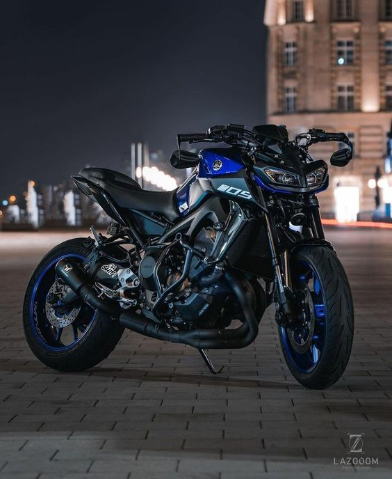
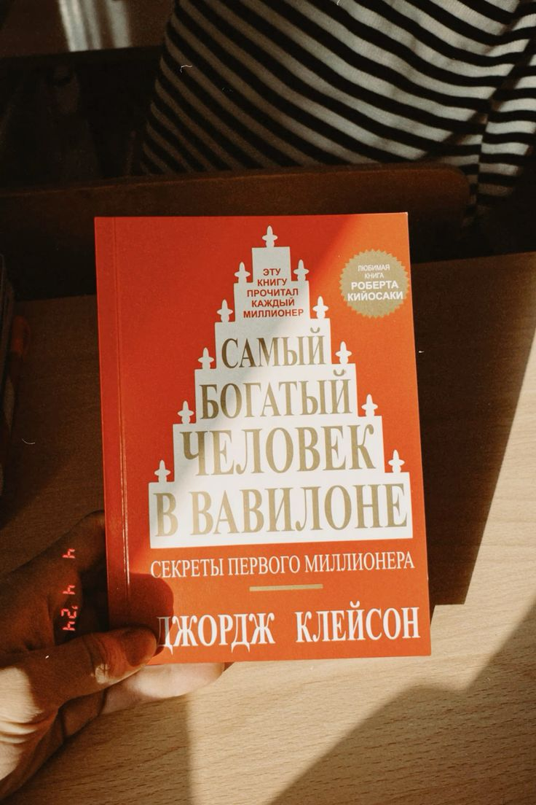

Мені 16 років. Наразі навчаюсь в коледжі на першому курсі, мені дуже подобається, тільки шкода, що дистанційне. Раніше навчався в Олевській гімназії №1 до 9 класа. Зараз це Олевській ліцей №1.Там я знайшов собі дуже крутих друзів з якими спілкуюсь і досі. Коли навчався в гімназії паралельно ходив на боротьбу приблизно 5 років до 7 класу. Потім в моєму житті сталася трагедія та через неї я перестав ходити на боротьбу. Я захворів на сахариний діабет. Це був переломний момент мого життя, але я з цим справляюсь. Коли я захворів, я почав писати вірші, мені це дуже подобається, а ще я прихильник Тараса Шевченка.
Мої хобі
-
Займатись спортом
Через день займаюсь спортом
-

Їздити на мотоциклі
Майже що дня їзжу на мотоциклі
-

Люблю читати книги
З дитинства читаю книги
-

Програмування
Час від часу пишу код. Знаю Python і HTML/CSS